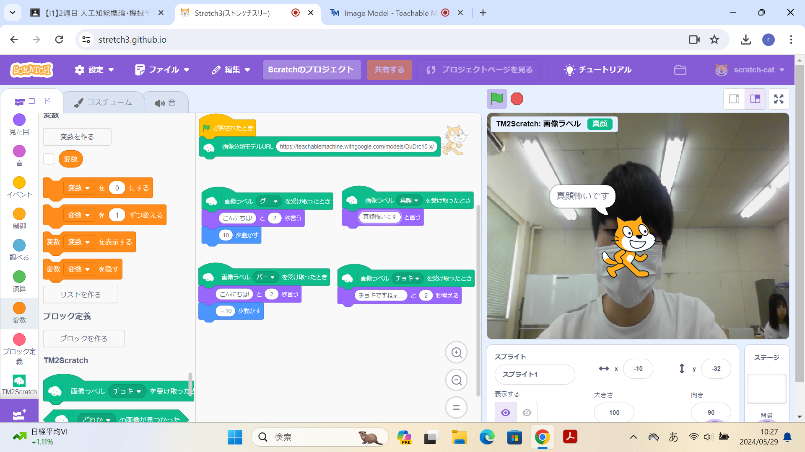
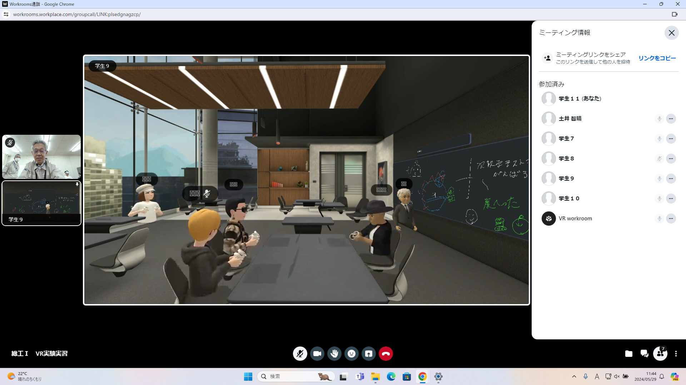

第2週目
2-1 2週目のレポートをHTMLで作る
1.内容
2週目のレポートをHTML形式で作成する。
2.感想
行を変えるための＜br＞を忘れて改行できていなかった時があったので
注意してレポート作成をしていきたいです。
3. 2週目が完成した人は1週目のレポートも完成させる
2-2 機械学習体験

1.内容
Teachable Machineを用いて、人工知能に「グー」「チョキ」「パー」「真顔」を識別させて、
stretch3でプログラムを作成する。
2.感想
スクラッチの拡張機能があんなにたくさんあるとは思いませんでした。
人工知能へ各動作を記憶させてもちょっと向きを変えたりすると誤った判断をしたりと
まだまだ進歩できそうだなと感じました。
2-3 VR（バーチャルリアリティー：Virtual Reality）会議室の体験

1.内容
VRゴーグルを使用して、バーチャル空間の体験をする。
2.感想
人生で初めてVRゴーグルをつけてバーチャル空間を体験したのですが、
没入感がすごくて、技術の進歩を実感しました。
バーチャル空間を使ったイベントなどを聞いたことがあるのですが、盛り上がりそうだなと思いました。
海外では普及し始めていると知って驚きました。